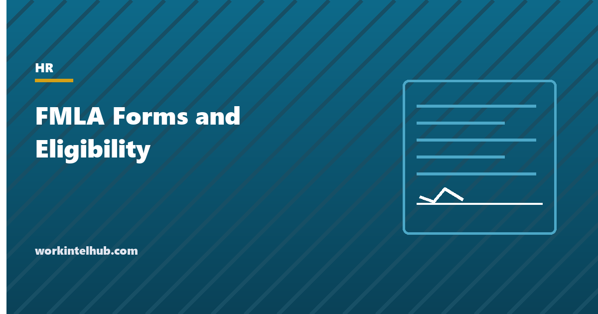

FMLA Forms and Eligibility

The Family and Medical Leave Act gives eligible employees of covered employers up to twelve weeks of unpaid, job-protected leave in a twelve-month period for their own serious health condition, a family member's, a new child, or a family member's military service, and up to twenty-six weeks to care for a seriously injured servicemember. The law is administered through a set of Department of Labor forms and a set of deadlines that start the day an employee says something that sounds like a request. Most FMLA claims against employers are about the deadlines, not the leave.
The checker below applies the three eligibility tests and names the form and the notices for each type of leave. The rest of the page walks through the forms, the timeline from request to designation, and the mistakes that turn a routine leave into an interference claim.
FMLA eligibility checker
Count everyone on payroll, including part-time and on leave.
Service before a break of 7 years or more does not count unless the break was for military service or a written agreement.
Hours worked, not hours paid. PTO, holidays and leave do not count. Airline crew have a different test.
This applies the federal test in 29 CFR 825.110. State family leave laws (California, New York, New Jersey, Washington, Massachusetts, Colorado, Oregon, Connecticut and others) have lower thresholds and paid benefits, and many employers are covered by a state law when they are not covered by the FMLA.
The three eligibility tests
The FMLA covers private employers with 50 or more employees in 20 or more workweeks in the current or preceding year, and all public agencies and schools. An employee of a covered employer is eligible under 29 CFR 825.110 if three things are true on the day leave is to begin.
- Twelve months of service. Any twelve months, not necessarily consecutive. Service before a break of seven years or more is disregarded unless the break was for military service or covered by a written agreement. A seasonal worker returning for a fourth summer may qualify.
- 1,250 hours of service in the twelve months before the leave. Hours actually worked under the Fair Labor Standards Act's rules, so paid leave, holidays and prior FMLA leave do not count, but overtime does. That is roughly 24 hours a week. An employer that has not kept accurate records of an exempt employee's hours bears the burden of showing the test was not met.
- Fifty employees within 75 miles of the worksite. Counted on the day the employee gives notice. Remote employees are assigned to the office they report to and receive assignments from, not their home.
An employee who fails any test is not eligible, and the eligibility notice must say which test and why. Employers should then check state law: California's CFRA applies at five employees, and the paid family leave programmes in New York, New Jersey, Washington, Massachusetts, Colorado, Oregon, Connecticut, Maryland, Delaware and Minnesota have their own tests and their own forms. An employee ineligible under the FMLA is often eligible under one of those.
The forms and what each does
The Department of Labor publishes optional forms. Employers may use their own provided they ask for no more than the regulations allow, and many do because the DOL forms are long. The current editions carry an expiration date in the top corner; check it, because expired editions keep circulating.
| Form | Purpose | Completed by | Deadline |
|---|---|---|---|
| WH-381 | Notice of Eligibility and Rights and Responsibilities | Employer | Within 5 business days of the request or of learning leave may be FMLA-qualifying |
| WH-380-E | Certification of the employee's own serious health condition | Health care provider | Employee has 15 calendar days to return it |
| WH-380-F | Certification of a family member's serious health condition | Health care provider | 15 calendar days |
| WH-382 | Designation Notice: whether leave is approved as FMLA and how it counts | Employer | Within 5 business days of having enough information |
| WH-384 | Certification of qualifying exigency for military family leave | Employee | 15 calendar days |
| WH-385 | Certification for military caregiver leave, current servicemember | Health care provider | 15 calendar days |
| WH-385-V | Certification for military caregiver leave, veteran | Health care provider | 15 calendar days |
There is no certification form for bonding leave after birth or placement; the employer may ask for reasonable documentation of the birth or placement. The WH-381 is the form most often skipped, and its absence is what turns a leave dispute into a claim: an employer that never told the employee their rights and obligations cannot later hold them to those obligations. Send it every time, even when the answer is "not eligible", because the regulation requires the reason to be stated.
The timeline from request to designation
- The request. An employee need not say "FMLA". "I need a few weeks off for surgery" or "my mother is in hospice" is enough to start the clock. Managers need to know this, because the five days start when the manager hears it, not when HR does. For foreseeable leave the employee should give 30 days' notice; for unforeseeable leave, as soon as practicable, usually the same or next business day.
- Eligibility notice, five business days. WH-381, stating eligibility or the reason for ineligibility, the rights and responsibilities, whether certification is required, and whether paid leave will be substituted. 29 CFR 825.300 sets the deadline.
- Certification, fifteen calendar days. The employee returns the medical certification. If it is incomplete or insufficient, the employer states in writing what is missing and allows seven calendar days to cure. The employer may contact the provider only through HR or a leave administrator, never through the direct manager, and only to authenticate or clarify. Second and third opinions are allowed at the employer's expense.
- Designation notice, five business days. WH-382, stating whether the leave is designated as FMLA, how much will be counted, whether a fitness-for-duty certification will be required to return, and any paid leave substitution. If the amount is unknown, the employer states it at least every 30 days on request.
- During leave. Group health coverage continues on the same terms. The employee pays their share; if payment is 30 days late, coverage may end after 15 days' written notice. Intermittent leave is tracked in the smallest increment payroll uses for other leave, no larger than one hour.
- Return. To the same or an equivalent position, with the same pay, benefits and terms. A fitness-for-duty certification can be required only if the designation notice said so and the policy applies it to all similar employees.
Retroactive designation is allowed only where it does no harm to the employee. An employer that lets an employee take six weeks of leave and then designates it as FMLA afterwards may find the employee is entitled to another twelve, because the failure to designate cost them the chance to plan.
The mistakes that create claims
- Counting FMLA absence in an attendance policy. The single most common interference claim. Points, occurrences and no-fault triggers must exclude FMLA leave; our attendance policy generator writes the exclusion.
- Managers who do not recognise a request. Train them that any mention of a health condition, a family member's condition, a pregnancy or a military deployment goes to HR the same day.
- Asking for a diagnosis. The certification asks for medical facts sufficient to show a serious health condition, not the diagnosis itself, and the Genetic Information Nondiscrimination Act requires a safe-harbour notice on any request for medical information so that genetic information is not disclosed.
- Terminating shortly after leave. Timing alone raises an inference. A termination in the weeks after return needs a documented reason that predates the leave. The same applies to a performance improvement plan started on the day the employee comes back.
- The 12-month period nobody chose. Employers may measure the leave year four ways, and the rolling backward method prevents stacking 24 weeks across two calendar years. If the handbook does not choose, the method most favourable to the employee applies.
- Forgetting the ADA. An employee who exhausts twelve weeks and cannot return may be entitled to additional leave as a reasonable accommodation. Automatic termination at week twelve is a recurring EEOC target.
- Mixing the files. Certifications and medical information go in a confidential medical file, separate from the personnel file, with access limited to those who administer the leave.
FMLA leave is unpaid, but employers may require, and employees may choose, to substitute accrued paid leave. Our PTO accrual calculator works out what is available. Where a state paid family leave benefit applies, the two run concurrently in most states, and the designation notice should say so.
Key takeaways
- Eligibility needs all three: 12 months of service (not necessarily consecutive), 1,250 hours actually worked in the prior 12 months, and 50 employees within 75 miles of the worksite.
- The clock starts when a manager hears something that sounds like a request. The eligibility notice (WH-381) is due within five business days.
- Certification forms match the leave type: WH-380-E and WH-380-F for health conditions, WH-384 for exigency, WH-385 and WH-385-V for military caregiver leave. Employees get 15 days to return them.
- The designation notice (WH-382) is due within five business days of having enough information, and retroactive designation is allowed only where it does no harm.
- FMLA absence can never count in an attendance policy, and termination soon after leave needs a documented reason that predates it.
- An employee ineligible under the FMLA is often eligible under a state law with lower thresholds, and leave beyond 12 weeks may be owed under the ADA.
Frequently asked questions
Who is eligible for FMLA leave?
An employee of a covered employer (50 or more employees, or any public agency or school) who has worked for that employer for at least 12 months in total, has worked at least 1,250 hours in the 12 months before the leave, and works at a site where the employer has 50 or more employees within 75 miles. All three must be met on the day leave begins.
What FMLA forms does an employer need?
The employer sends WH-381 (eligibility and rights notice) within five business days of a request and WH-382 (designation notice) within five business days of having enough information. The employee returns the certification that matches the leave: WH-380-E for their own condition, WH-380-F for a family member's, WH-384 for a qualifying exigency, WH-385 or WH-385-V for military caregiver leave. Employers may use their own forms if they ask for no more than the regulations allow.
How long does an employee have to return FMLA paperwork?
Fifteen calendar days from the request for certification, unless it is not practicable despite diligent, good-faith efforts. If the certification is incomplete or insufficient, the employer identifies the gaps in writing and allows seven calendar days to cure them.
Does an employee have to say FMLA to request leave?
No. The employee only has to give enough information for the employer to know the leave may be for an FMLA-qualifying reason, such as surgery, a hospital stay, a family member's serious illness, a new child or a military deployment. The employer then has to ask for what else it needs. Managers should pass any such mention to HR the same day.
Can an employer count FMLA leave against an attendance policy?
No. Counting FMLA-protected absence as an occurrence, assigning points for it, or using it to trigger discipline is interference with FMLA rights. Attendance policies must exclude FMLA leave expressly, along with other protected absences.
What happens when the 12 weeks run out?
The FMLA job protection ends, but the employer's obligations may not. An employee who cannot yet return because of a disability may be entitled to additional leave as a reasonable accommodation under the ADA, and state laws may provide more. Terminating automatically at week 12 without an individualised assessment is a recurring EEOC enforcement target.